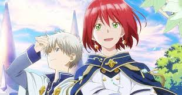
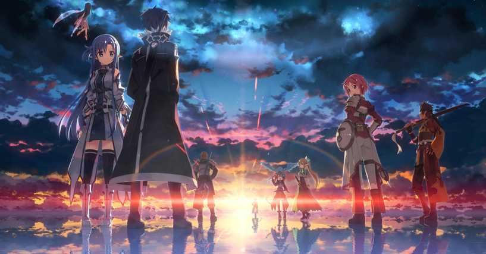

Welcome to Animania!
Romance
Snow White With the Red Hair
There are about 11 different genres of animes or manga stories in a whole, but lets talk about the main 3 that rule teh categories. The third most popular genre is romance, most like on regulatr television romance will always win the heart of the viewers from a wholesome teenage love building, or a nail bitting life or death sittuation that brings the two main characters together. It may not be as popular as the other two genres but romance will always be a loved and desired genre in any situation.
Action

(Seven Deadly Sins)
Here we start to get into the powerhouses of the anime genres, and action rolling in at number two definitely deserves its spot. Nothing gets fans more excited than a great fight scene or high action moment to get the blood pumping. Moments like these will have ypu on the edge of your seats, when the main character gets put in a life or death situation to where they have to battle in an epic fight scene or high tention moment to escape, or eeven trying to accomplish a task within a certain time limit, these are the moments when fans have their undivided attention on the screen.
Fantasy
(Sword Art Online)
Here we have the King of all genres, argueably the highest genere even outside of anime, fantasy takes the number one spot in the heart of fans. Fantasy allows the creator and consumer to open their minds to a world of endless possibilities. Within in fantasy genre the is little to almost no boundaries to what stories can be made up, this allows creativity to be shown, minds to be expressed, and numerous ideas to be explored, and ontop of all of that it has been shown that the more creative the story is, the more the viewers love the story.